Queer Fans Deserve Data
Fandom, passion, code and the desire to see fair and positive LGBTQ representation on television
The LezWatch.TV story
Daytime's first w|w kiss
BAM
Another show I watched just for the gay.
September 23, 2014
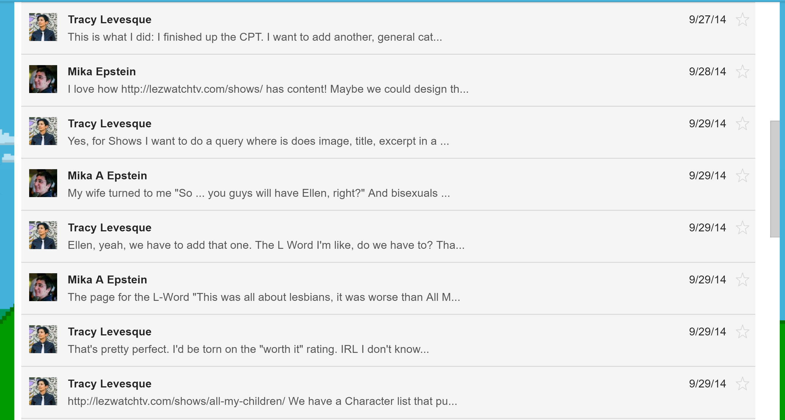

Post Types
Shows
Metadata
- Worth It?
- Realness
- Quality
- Screentime
- Queer Timeline
- Notable Episodes
Characters
Metadata
- Gender Identity
- Sexual Orientation
- Actor Name
Taxonomies
- Tropes - Used by Shows
- Stations - Used by Shows
- Clichés - Used by Characters
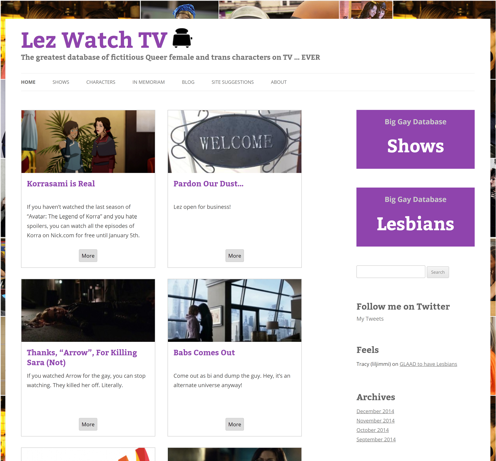
2015
Characters
- Roles: Main, Recurring or Guest
- Death Date
Taxonomies
- Nations
2016
Shows
- Stars: Gold, Silver or Bronze
- Warnings
- Airdates
- IMdB ID
- Show Score
2016
Taxonomies
- Formats
- Genres

2017
Shows
- Stars: Gold, Silver or Bronze
- Warnings
- Airdates
- IMdB ID
- Show We Love
- Show Score
October 2017

The L Word Overload
Too many characters.
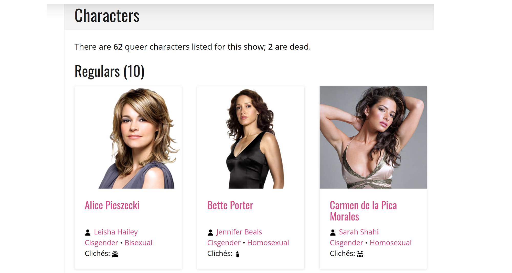
The L Word Characters
- 10 Regulars
- 14 Recurring
- 38 Guest
= 96 second load time
~1 Second
The Orphan Black Clone Conundrum
One actor playing different characters with different roles on a single show.
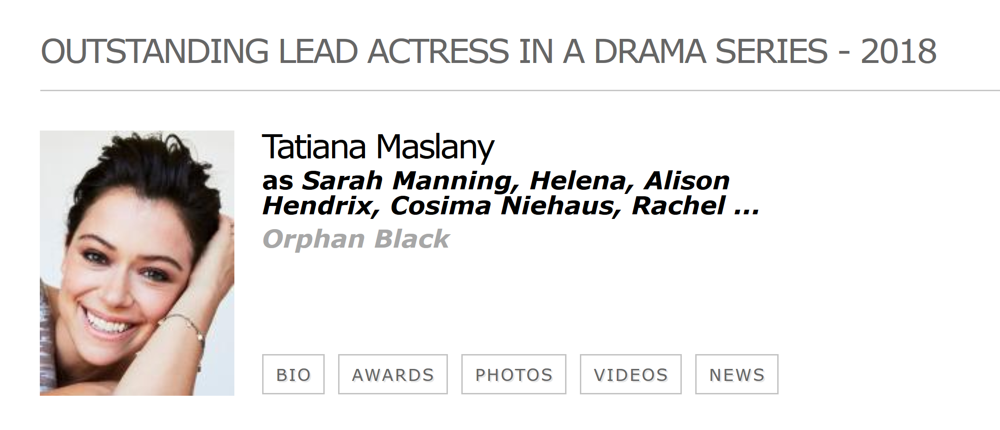
Orphan Black
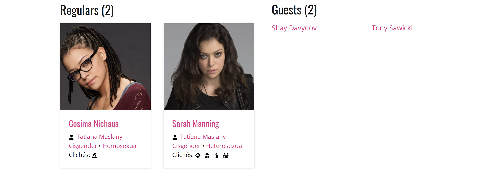
Soap Operas
Multiple actors playing the same character.
All My Children
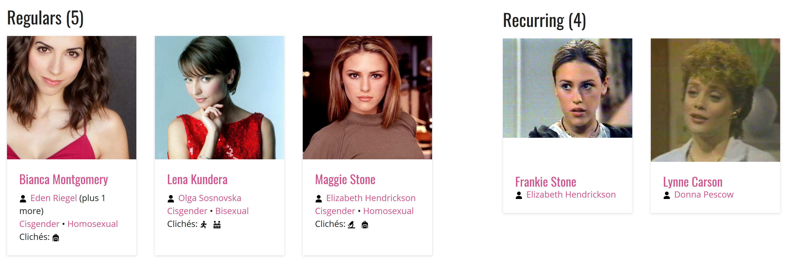
Determine which actor primarily represents the character
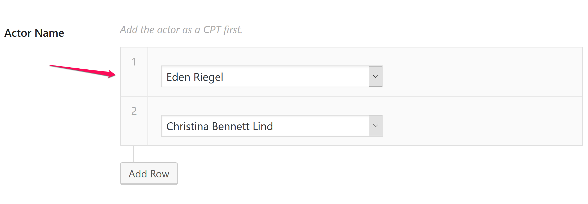
The Biggest Code Challenge of Them all
Sara Fuck*ing Lance
Sara Lance
Has died and come back to life 3 major times
Sara Lance
Has been played by 2 different actors
Sara Lance
Has been on four different shows with different roles
Legends of Tomorrow - Main
Arrow - Recurring
Supergirl - Guest
The Flash - Guest
Sara Lance
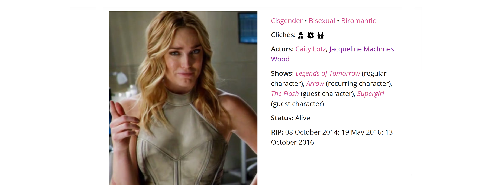
Make Data Better
In 2017 We Added...
Actors
Didn't the site already have actors?
Actors
Post Type or a Taxonomy?
New Post Type: Actors
Metadata
- Actor Name
- Gender Identity
- Sexual Orientation
- Birth and death dates
- Social accounts
- IMdB and Wikipedia links
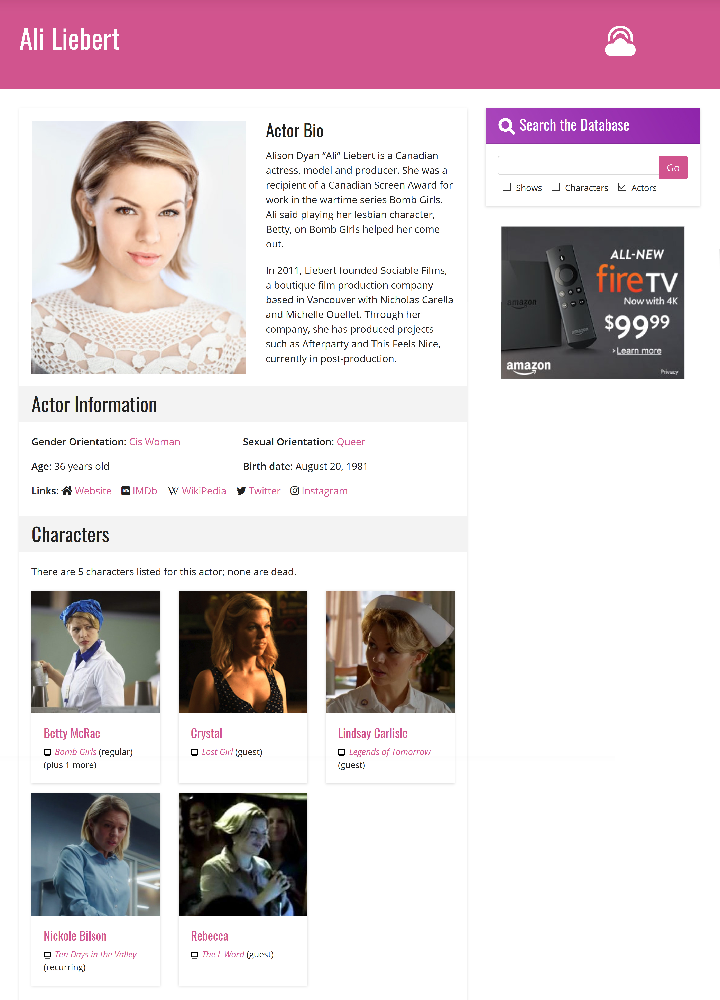
Actor Policy
When in doubt, don’t out.
Make Data Useful
As of this morning
3008 Characters
990 Shows
Find shows you want to watch
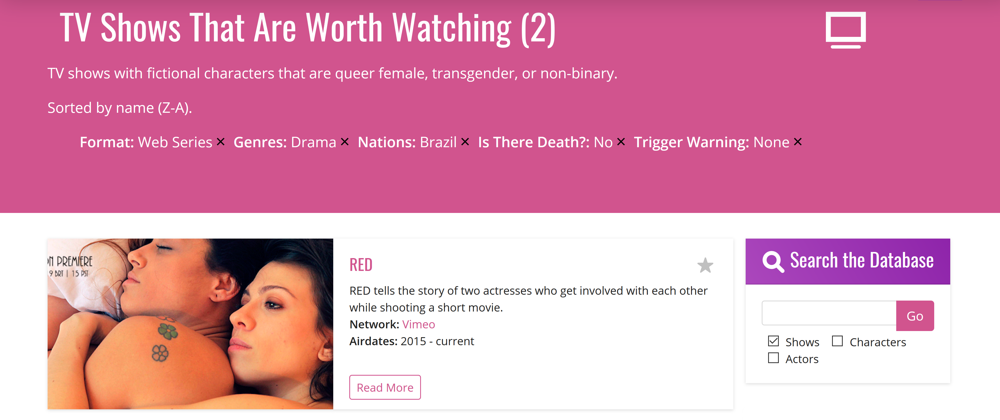
Find characters you can relate to
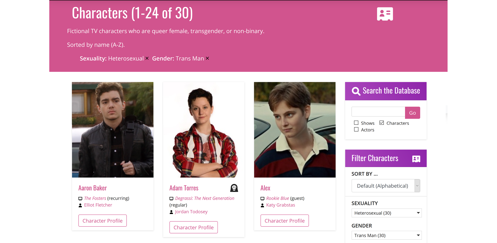
Reward Good
Shows We
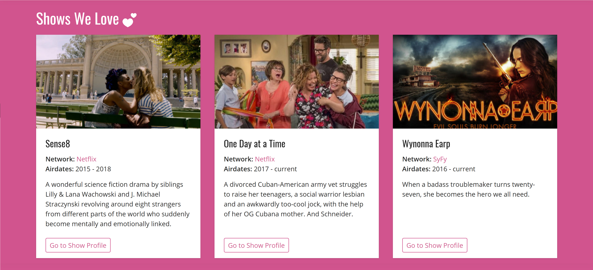
Shows We
- Both Mika and I have to agree
- High quality and positive queer representation
- Plenty of screentime
- No shock-value death
Intersectionality

Intersectionality
The concept that oppressive institutions (racism, sexism, homophobia, transphobia, ableism, xenophobia, classism, etc.) are interconnected and cannot be examined separately from one another.
Jane the Virgin
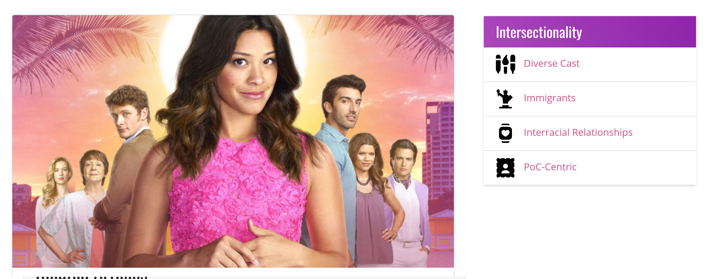
Show Scores
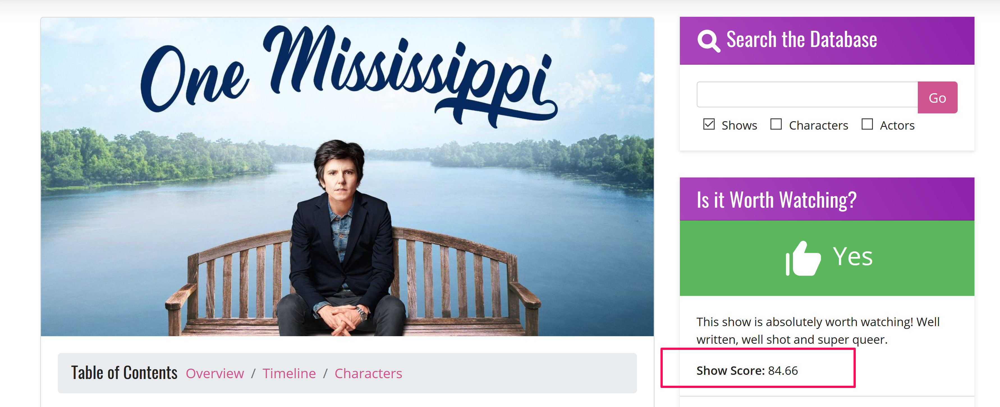
Show Scores
A mathematical method of a generating a numeric score for TV shows from 0 to 100 to help identify shows that are ‘better’ for queer audiences than others.
Show Scores
Each of these sections can earn up to 100 points
- Ratings
- Character Survival Rate
- Character Clichés
- Show Tropes
The scores are added together and divided by 4 to generate the overall score.
Ratings
Ratings - 1 to 5 points each
- Realness
- Quality
- Screentime
Sum is multiplied by 3 for a max of 30 points
Ratings
Worth Watching?
- Thumbs up +10
- Thumbs ‘meh’ +5
- Thumbs down -10
Ratings
Star Ratings
- Gold Star +20
- Silver Star +10
- Bronze Star +5
Ratings
Trigger Warnings
- Low -5
- Medium -10
- High -15
Ratings
Show We Love
= 40 points
Character Survival Rate
The percentage of queer characters who are alive.
Everyone alive = 100 points, everyone dead = 0 points
Character Clichés
The percentage of characters with no clichés (except ‘Queer In Real Life’)
No clichés = 100 points, clichés for everyone = 0 points
Show Tropes
- None
- Good: Happy Ending, Everyone’s Queer
- Maybe: Coming Out, Big Queer Wedding, Subtext Only
- Ploy: Erased Queerness, Happiness then Tragedy, Queer For Ratings, Queer for Laughs, Queerbaiting
- Bad: Big Bad Queers, Prison, Queerbashing
- Regular: Everything else
Show Tropes - Points
Five main formulas.
- None = 100
- All Good = 95
- All Good + Maybe = 85
- More Bad than Good = 40
- All Bad + Ploys = 25
Show Tropes - Points
Everything Else
Good + Maybe - Bad ÷ Number of tropes
No ploy tropes + 50 bonus points.
Show Tropes - Points
Bury Your Queers
Lose 1/3 of your trope score.
Bonus Points!
Intersectionality
+3 bonus points for each, up to a max of 15.
Statistics
The State of Representation
The Bad
The Good
The Future of Representation
Black Lightening
Steven Universe
Pose
Supergirl
Bat Woman
The Future of LezWatch.TV
WordPress Plugin
Alexa Skill
Representation Matters
1988
2018
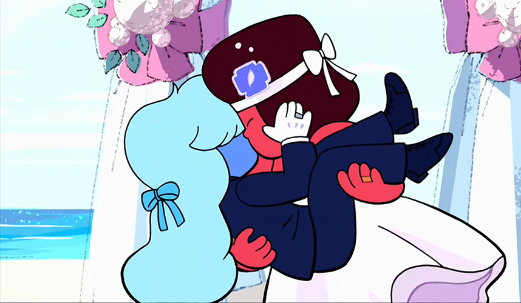